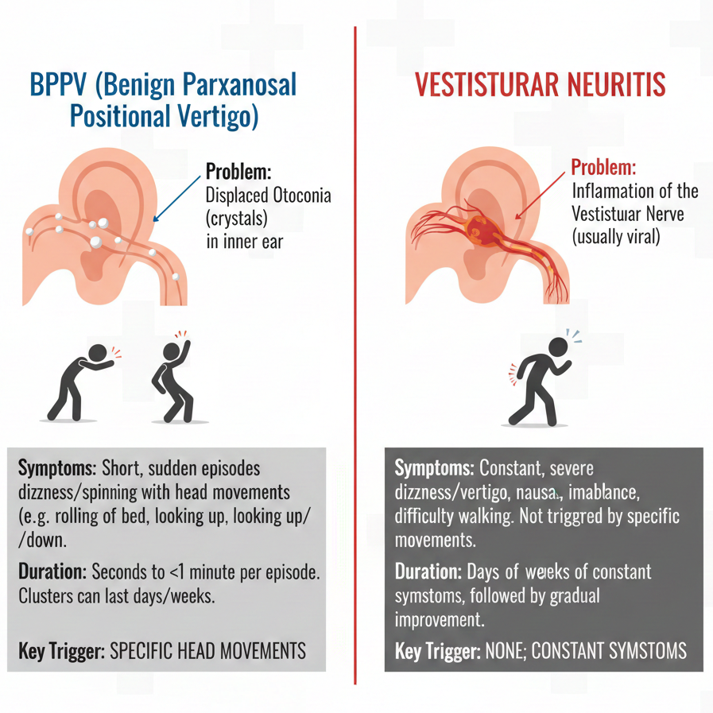

This is a classic case of vestibular neuritis in an elderly patient. Vestibular neuritis is an acute unilateral peripheral vestibulopathy, typically affecting the horizontal semicircular canal and superior vestibular nerve branch most prominently. It often happens after preceding viral-like illness.
Vertigo in vestibular neuritis starts suddenly. Symptoms peak in the first 24–48 hours and remain continuous (not brief/episodic). Symptoms are worsened by head movements or position changes. Other symptoms include nausea, vomiting and disequilibrium.
In contrast, BPPV causes brief (seconds) vertigo only with specific position changes, resolving quickly when still.
Vestibular neuritis usually not involves auditory symptoms (hearing loss, tinnitus, ear pain, ear fullness). This nature could be differentiated from labyrinthitis (which involves the cochlea) or Meniere's disease.
Qurstion 1:
Perform motor, sensation test of 4 limbs and cranial nerve
It is a crucial step to rule out central cause of vertigo. If there is focal motor or sensory deficit, speech difficulty, facial asymmetry or visual changes (including diplopia), central cause should be suspected.
B. Dix-Hallpike test, Supine roll test
Dix-Hallpike test is mainly used to diagnose posterior canal BPPV.
In this case, we observe spontaneous right-beating nystagmus. Symptoms worsen in positional change. However, the nystagmus is persisting without latency or clear fatigability. The nystagmus does not follow Posterior BPPV pattern (upbeat-torsional nystagmus).
Supine roll test is used to diagnose horizontal canal BPPV.
Similarly, we observe spontaneous right-beating nystagmus. Symptoms worsen in positional change. However, it does not follow horizontal canal BPPV pattern (geotropic or apogeotropic).
Vertigo may increase mildly with head rolling due to further vestibular asymmetry, but without the paroxysmal, position-locked pattern of horizontal canal BPPV.
C. Bedside HINTS examination (Head Impulse, Nystagmus, Test of Skew)HINTS is useful to differentiate central and peripheral vertigo.
Head Impulse Test (HIT) — tests the vestibulo-ocular reflex (VOR).
How to perform: Patient fixes gaze on your nose. Quickly thrust the head ~10–20° to each side (passive, unpredictable).
Peripheral: Positive — Corrective saccade (rapid eye movement back to target) on the affected side (e.g., left-sided neuritis → corrective saccade on left thrust).
Central: Negative — No corrective saccade (VOR intact, as the lesion spares the peripheral nerve but affects central pathways).
Nystagmus — Observe in primary gaze and eccentric gaze.
Peripheral: Unidirectional horizontal nystagmus (fast phase away from the affected side, e.g., right-beating in left neuritis). Follows Alexander's law (increases on gaze toward fast phase, decreases/opposite on gaze away). No direction change.
Central: Direction-changing (bidirectional gaze-evoked), pure vertical, torsional, or non-direction-fixed nystagmus.
Test of Skew — Alternate cover test for vertical ocular misalignment.
How to perform: Patient fixes on distant target. Cover one eye, uncover, observe for vertical refixation saccade; repeat on other eye.
Peripheral: No skew (normal, no vertical deviation).
Central: Skew deviation present (vertical misalignment, often with refixation saccade; highly specific for brainstem involvement).
In this case, we can conclude that it is a peripheral vertigo with left sided lesion.
D. Assessment on mobility
In the absence of red flags or absolute contraindications, it is our role to assess the patient’s mobility. Mobility assessment should proceed gradually according to the patient’s tolerance. If the patient tolerates it well, it may be helpful to gather information on their gait and balance during the assessment.
Question 2:
A. Epley maneuver or canalith repositioning procedure
The presentation of this patient does not follow the usual picture of BPPV. Even though the patient complaints of worsening of symptom in Dix-Hallpike test/ Supine roll test, it cannot simply be concluded to be BPPV.
Summarizing the assessment result, canalith repositioning procedure is not necessary in this case.

B. Mobility training
In this case, patient still complaints of severe nausea and constant vertigo. We may keep monitoring and start mobility training as soon as the symptoms subside enough.
C. Don’t do anything and record it as Central cause of vertigo
According to the assessment, it is not likely a central cause of vertigo. This option is not appropriate.
Remark: If a central cause of vertigo is suspected according to your findings, normal finding in plain CT Brain is not sufficient to rule out Posterior circulation ischemic stroke. You should discuss with doctor for further investigation.
D. Start gentle adaptation and habituation exercise
Early vestibular rehabilitation (VRT) is supported by multiple studies and guidelines for unilateral peripheral vestibular hypofunction like vestibular neuritis. Starting early (within the first few days, even day 1–3 if severe vertigo allows) leads to faster symptom reduction, better long-term function, and lower risk of persistent issues like PPPD (persistent postural-perceptual dizziness). Vestibular rehabilitation can be started as soon as severe vegetative symptoms (intense spinning, vomiting) subside enough to tolerate mild provocation — often within 24–72 hours.
Habituation specifically (repeated exposure to symptom-provoking stimuli to desensitize the brain) is a core component of vestibular rehabilitation for vestibular neuritis. Classic examples include Cawthorne-Cooksey exercises or simple head movements.
Habituation works best when exercises provoke mild to moderate symptoms (e.g., 2–4/10 on a dizziness scale) that subside quickly after stopping — not severe distress.
In this case, we can start simple adaptation and habituation when symptoms are controlled by medication prescribed by doctor. Examples are given below.
Gentle head nodding (up/down) or side-to-side turns while lying down or sitting, eyes open or fixed on a point.
Slow gaze stabilization (VOR x1): Hold a target at eye level and move head slowly side-to-side while keeping eyes on target.
Repeated small head tilts or turns (e.g., 5–10 reps, pause if symptoms spike).
Do it in short sessions (30–90 seconds per exercise, or until mild-moderate dizziness), 3–5 times per day total (e.g., 10–15 minutes spread out). Stop and rest if symptoms exceed moderate or last too long.
Supplementary information on vestibular neuritis
Medical management of vestibular neuritis
Symptomatic relief (short-term only, 1–3 days): Antiemetics for nausea/vomiting
Vestibular suppressants (sparingly, as they can delay compensation): e.g., meclizine, dimenhydrinate, or low-dose benzodiazepines (lorazepam/diazepam) for severe vertigo/anxiety. Guidelines stress short duration only, especially in elderly patients, to avoid prolonging recovery or increasing fall risk/sedation
Corticosteroids — Consider short-course oral steroids (e.g., prednisolone 50–60 mg daily for 5 days, then taper by 10 mg every 2 days) if presentation is within 72 hours (ideally 24–48 hours for best effect).
Modest benefit in accelerating vestibular function recovery and reducing symptom duration (meta-analyses and studies show better outcomes with early steroids; GRACE-3 recommends shared decision-making due to very low–moderate certainty evidence, weighing risks like GI upset, hyperglycemia in elderly/diabetics)
In elderly: Use cautiously (monitor blood sugar, BP), but still often offered if no contraindications.
Supportive: IV fluids if dehydrated from vomiting, fall precautions, dark/quiet environment, head elevation.
Prognosis
Excellent overall prognosis
Most patients recover well with appropriate management.
Acute severe vertigo peaks in 24–72 hours. It improves significantly within 1–2 weeks.
Full functional recovery is expected in typically 2–6 weeks for many (return to daily activities), but residual mild imbalance or motion sensitivity can persist longer.
Complete peripheral vestibular recovery (on testing): Occurs in ~60–70% within 12 months; central compensation handles the rest effectively in most cases.
Timeframe variability: Elderly patients (like 60s–70s) may take longer (weeks to months) due to slower neural plasticity, comorbidities, or deconditioning, but still good outcomes with early VRT.
Potential complications:
~30–50% develop chronic mild symptoms (e.g., imbalance, oscillopsia on head movement) if VRT delayed.
Risk of secondary issues: Falls, anxiety, persistent postural-perceptual dizziness (PPPD) if maladaptive avoidance behaviors occur.
Recurrence: Uncommon (~5–10%).
Learning point:
Understand clinical presentation and management of vestibular neuritis
Differentiate peripheral and central cause of vertigo
For more information, you may refer to the reference below.
Bae, C. H., Na, H. G., Choi, Y. S. (2022). Current diagnosis and treatment of vestibular neuritis: a narrative review. Journal of Yeungnam Medical Science, 39(2), 81–88.
Edlow JA, Carpenter C, Akhter M, Khoujah D, Marcolini E, Meurer WJ, Morrill D, Naples JG, Ohle R, Omron R, Sharif S, Siket M, Upadhye S, E Silva LOJ, Sundberg E, Tartt K, Vanni S, Newman-Toker DE, Bellolio F. Guidelines for reasonable and appropriate care in the emergency department 3 (GRACE-3): Acute dizziness and vertigo in the emergency department. Acad Emerg Med. 2023 May;30(5):442-486. doi: 10.1111/acem.14728. PMID: 37166022.
Herdman, S. J., & Clendaniel, R. (2014). Vestibular rehabilitation. FA Davis.
Case creator: Mr. Leon Yiu